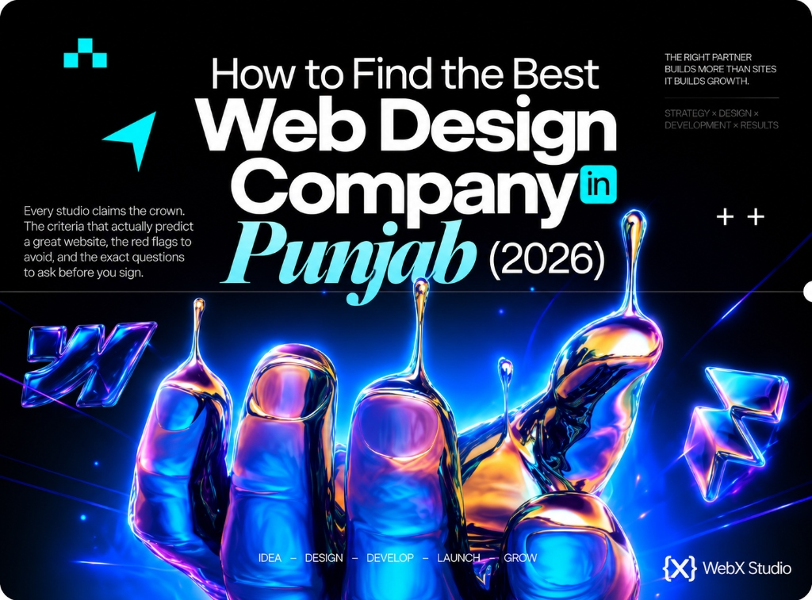

How to choose a web design company in Punjab
Every studio calls itself “the best web design company in Punjab.” Here’s how to cut through the noise - the criteria that actually predict a great website, the red flags that waste your money, and the exact questions to ask before you sign.

Search “best web design company in Punjab” and you’ll get a wall of studios all claiming the same crown. The badge means nothing on its own. What separates a genuinely great web partner from an expensive mistake is evidence - and once you know what to look for, the choice becomes surprisingly clear.
We’re Web{X} Studio, a Ludhiana-based web development agency working with businesses across Punjab and internationally. Rather than pitch ourselves, here’s the honest framework we’d hand you to judge any studio - including us. (If you’d rather see what we offer, it’s on our web design company in Punjab page.)
The best web design company in Punjab for you is the one whose live work, speed scores and communication match your goal - not the one with the loudest ad or the lowest quote.
The 5 criteria that actually matter
1. A live portfolio you can open on your phone
Screenshots hide sins. Real URLs don’t. Ask for live sites the studio has built, open them on mobile, and notice: do they load fast, feel premium, and work smoothly? A studio proud of its work will hand over links instantly.
2. Real performance, not promises
Run a couple of their sites through PageSpeed Insights yourself. Green scores mean the studio engineers for Core Web Vitals - which is exactly what decides rankings and conversions. Slow “beautiful” sites lose customers every day.
3. SEO built in, not bolted on
The best studios bake in clean markup, structured data, fast images and sensible architecture from day one, and offer ongoing technical and on-page SEO. Design and SEO working together is what gets you found for “web design company in Punjab” - or for your own products.
4. A named, contactable team
You want to know who actually builds your site. Beware resellers who take your money and quietly outsource the work to unknown hands. A real studio has a real team, a real address, and real accountability.
5. Honest ownership and support
You should own your domain, hosting and files - in writing. And you should know before signing what happens after launch: edits, security, hosting and SEO. Ambiguity here is where good projects turn sour.
Judge us by our own framework
Open our work, check the speed, ask us anything. If it matches your goal, we’ll send a clear INR quote within two business days - and you’ll own everything we build.
Talk to Web{X} StudioRed flags to walk away from
- “Complete website for ₹8,000.” It’s a shared template with your logo - slow, unrankable, unscalable.
- No live portfolio. If they can’t show real work, there’s a reason.
- “Guaranteed #1 on Google.” Nobody can guarantee rankings. Serious studios promise process and results, not fantasies.
- Vague ownership. If they dodge who owns the domain and files, you don’t truly own your website.
- No speed or SEO evidence. Pretty is easy; fast and findable is engineering.
“Best” isn’t a trophy a studio awards itself - it’s the fit between their proof and your goal.
Local studio or metro agency?
A capable Punjab studio - in Ludhiana, Amritsar, Jalandhar or Mohali - often matches a Delhi or Mumbai agency’s quality at lower cost, plus the advantage of local understanding and in-person meetings. And for international clients, a Punjab studio delivers export-grade work at 40-70% less than a US or UK agency. Location is a bonus; portfolio and standards are the decision.
The questions to ask before you sign
- Can I see three live sites you’ve built for businesses like mine?
- What are their PageSpeed / Core Web Vitals scores?
- Who exactly builds my project, and where are you based?
- Do I own the domain, hosting, design files and code?
- What’s included after launch - edits, security, SEO, support?
- How do you approach SEO so I actually get found?
Ask these of every studio on your shortlist, and the “best web design company in Punjab” stops being a slogan and becomes an obvious, evidence-backed choice.